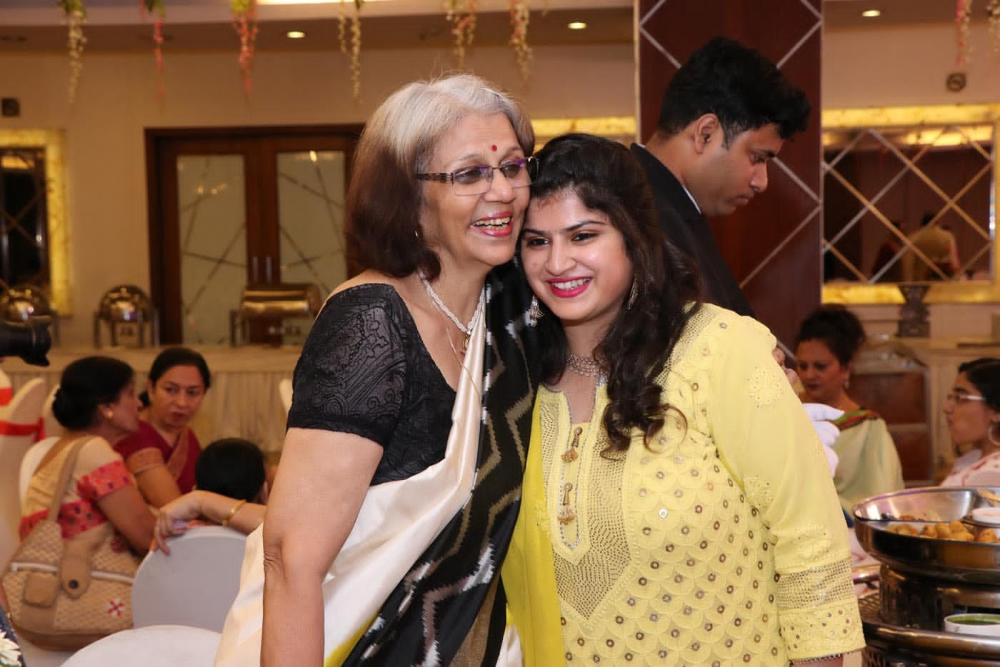
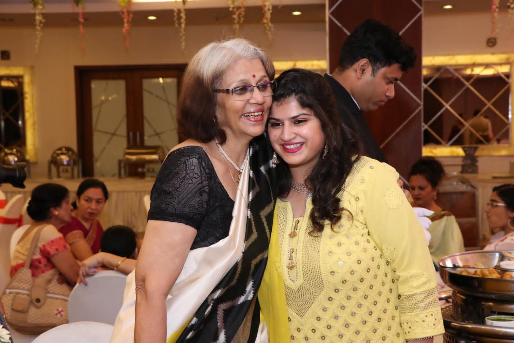
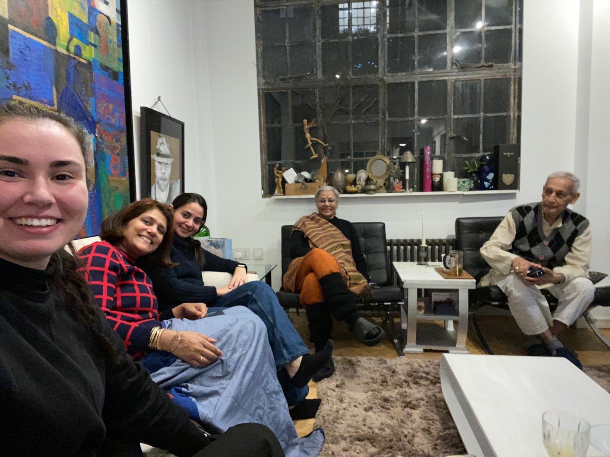
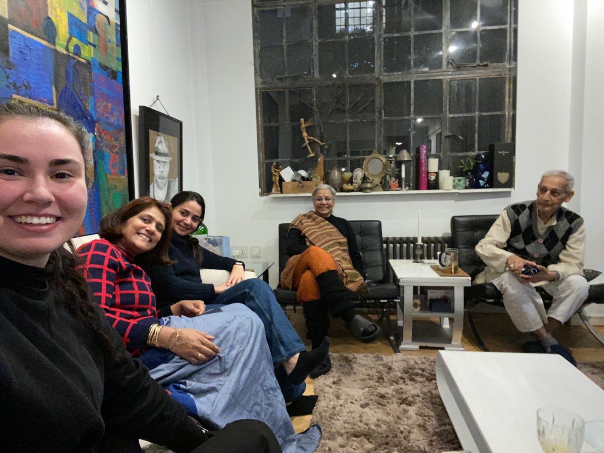

Six months before her 80th birthday, we sent a message to those who know and love Kalpana:
"Mummy, Mimi, Kalpana, Aunty,Mrs Mathur- whichever name you know her by, turns 80 in April 2024...."
We asked for a word, a sentence, a phrase or a PhD thesis that best describes her;
and a memory of an experience first hand.
Replies were overwhelming.


Family, for Kalpana, is not just those who share her gene pool. It is her students, her friends, and everyone who shares a meal, a moment in time, or her vision. This is the story of her life through the eyes of those who love her.
Kalpana was born on 13th April 1944 in Gwalior, the eldest of three daughters of Kanti Devi and Prabodh Gaur.
Atul Gaur, aka Chacha,
recalls the moment when news of Kalpana's birth arrived.
"I have some faint memories of MIMMI when she was born in Gwalior. I was hardly 4 and a half years old. I remember the moment news came; my father (her grandfather) took out his double barrel gun and fired a few shots in the Angan. This was followed by distribution of sweets in the entire neighborhood. Though I don’t have any pictures of her birth to share with you, I recall that when she was around four, we used to play, and she had a white blouse and a red/blackened skirt. She was the dearest to my parents. Even at that age, she was a foodie and she loved sweets. She was a fantastic kid, loved by one and all. Need not to say she has always been dearest to me. My favorite niece."

In 1945, when she was just one, Kalpana's parents Prabodh and Kanti moved from Gwalior to Calcutta, which was to be their home for the next sixty years.When they visited Gwalior, Kalpana's grandfather , a senior minister of the Scindia Royal family and a respected Vedant scholar instilled strong traditional values in her. In Calcutta, she was exposed to new ways, a new language, new food and the experience of living in a nuclear family.
Above: The nuclear family. Prabodh, Kanti, Kalpana and Deepika in the arms of Ayah.
Below:
The extended family. Standing L to R
Munna chacha, Papa, Baba ,Doctor Chacha, Nanha Chacha
Sitting on chairs L to R
Sulochan bua , Sukesh bua , Mummy, Dadi, Savitri Chachi, Vinod bua, Suvira Bua
Sitting on the floor
Manu, Shobha, Ranu, Chimmi, Sunita, Yashodhara,Raju, Sanju, Kalpana.
Meetali
“Didi” is the quintessential Elder sister! I’m the only one who addresses her as Didi she’s Jiji, Mimijiji or Kalpanajiji to everyone else!
I have so many memories: Her making “ladoos” of dal chawal and feeding me even when I was 5/6 years old! i remember her dressing up in her BOAC sari , looking so glamorous and going on flights. I remember her engagement, wedding, going and spending holidays with them in Dhanbad, Allahabad, Lucknow…. the first pizza I ever had was cooked by her! These are some precious and fond childhood memories

In 1957, Kalpana went to Ramnee, a boarding school in Nainital. We found evidence of her excellent grades, her samples of needlework and stunning oil paintings when she was barely thirteen.


However, when we ask her about Ramnee, she does not talk of these - what she remembers is the fresh mountain air. Her best memories are about the fabulous food, especially Ramnee cultlets and banana sandwiches,(waiting for a patent), her friends, Mother Josephine. Then in 2017, on a visit to London, Kalpana reconnected with Kobrat - one of her closest friends in Ramnee.
.Kobrat recounts:
xxxx
xxxxxxx
In 1964, Kalpana joined British Airways, then BOAC, and soon became the face of BOAC for the opening of their Dublin office. Below is a clip of the evening news...


Dhun Ward
Her college friend , who also worked with her at BOAC, Dhun Ward, recalls:
Kalpana has been, for me, the role model of a friend/wife/mother - you name it, she is the most all-round accomplished and unassuming person I know. Good looking. Good cook good at everything she attempted. In college, Kalpana, Manjari, and myself were kinda like the three witches of Macbeth - we were always quoting "when shall we three meet again. In thunder, lightning, or rain... In her airline job, she was a star as well - I have recollection of her doing a photoshoot for some publication/advertisement for the airline.
Manjari Chatterji
Kalpana: a tribute from an admiring friend
Here are four vignettes of time spent with Kalpana, may her shadow never grow less! Happy birthday, girl!
She was in a league of her own. As a bunch of gauche freshmen at Loreto College, Calcutta, there she was! Polished, shining, and twinkling with her doe eyes, pink cheeks, elegant nails, fabulous figure and unique, delightful hair style! She spoke in a soft, modulated, well-bred voice which made you feel you were in the living room, and had best behave. But she was full of fun and laughter too. Nothing prissy at all, and those of us who were still in skirts and keds, admired no end her slinky salwar kameez, her jauntily swirled dupatta, and grown- up manners. We must have been a strange foursome in our Eng. Lit (B.A. Hons.) class: Dhun, Dilnaar, Kalpana and myself, but we sat together, did home work together, ate together in the refectory, and had lunch parties at our homes. Rarely, and daringly, we frequented the many delights of Park Street just a stone’s throw from our College gates.
After her stint at BOAC, she married Anand—a dashing chap, we were relieved to see! And because he was in the Eastern Railways like my father, we met at Railway dos sometimes. I could faint seeing her as the competent hostess serving a fabulous lunch, and doing all the honors hardly expected of so young a wife! So grown- up!
Long break-- with us being in two continents, but cards and mutual friends keeping us in touch. Then a lucky break: on a visit to Calcutta my sister said she had a surprise for me! Guess who was the Librarian at her school, CIS? And she was living in Belvedere Park in the very house I had lived as a kid and again in my college days. So memories overlapping and confusing too. She was a brand new grandmother to Sunayna’s baby now. Past and present in a kaleidoscope of images—an experience not uncommon among our global time lapses now. There she was, beautiful young grandma with her little grandchild and looking after the new mother with traditional recipes for karaya laddus, keeping up a flow of conversation, witty observations, and as affectionate as ever.
The internet zamana now kept us in touch, and she kept asking me to visit her in Rochester N.Y. on her annual trips. Here I must digress and pay a tribute to dear Dhun—a tireless liaison for all friends. Dhun who lives in Toronto and had paid me a couple of visits in Wisconsin, also urged me to hop on a plane for the reunion. Well it was not to be, but so strong is our tie of friendship, we met quite recently: the mountain had come to Mohamet, right next door in Madison, WI. She gave me an ultimatum: COME or our friendship of 65 years would END…
And now another tribute-- to my daughter, Malini, who takes friendships and loyalty very seriously. I did not need coaxing when she offered to drive me to Madison. Here we met not just Kalpana—still glamorous-- but Anand, and Anand’s brother, his daughter whose home it was, and her husband and girls! Oh what a splendid reunion! So much hospitality!
So it is with a full heart and much love that I truly send her good wishes for a grand celebration. Cheers!
Deepika Jaidka and Naina
For Kalpana: Birthday wishes to the Beauty Queen of Danapur. Happy memories of those long ago days and of homemade guava cheese made by the girls! May we meet in 2024…..
This is the love story of Kalpana and Anand, through eyes of two children. The first - a three year old Meetali, unhappy that her sister, who doted on her, had now divided her attention when Anand entered her life.
The second, Chand is Anand's sisters son. Chand is excited that his mama who was studying engineering, met Kalpana was a young air hostess with BOAC.In an era when Mathurs married Mathurs, Anand disregarded convention - a wise choice!
Meetali
Didi and Jijaji got engaged in April 1962 when I was 3 yrs old! A grand engagement party was held at home. Didi all dressed up in a sari sat on the sofa in the drawing room next to ABCD , that’s how I referred toJijaji then! His name started with A and he often asked me to recite ABC…... and so that’s how I referred to him . I remember running across the room to jump up and sit on her lap just when the pictures were being taken !
Every fortnight he used to come from Jamalpur to Calcutta and come to meet Didi and take her out for the day. Frankly I was not very happy to see him because every time he came he took Didi out for the whole day!! He used to come in the morning, always In a white shirt and white trouser and sit in the same spot on the sofa in our drawing room . For some reason Didi was never ready and emerged on half an hour or so later. In this period when he was sitting and waiting for her I would be in and out of the room and this is when we had the ABC conversations! Finally Didi would emerge and they would go out for the day and lunch , film whatever. He would usually come back in the evening and go after dinner. This was a fortnightly ritual for a long time ! As they had the longest engagement of 3 yrs!
Despite her resentment then, today, Meetali enjoys a close relationship with both "Didi" and "Jijaji" and they exhange Wordle results everyday!
Chand
Kalpana mami was the epitome of beauty & grace .
Recall meeting her in Mumbai in the 60’s when she was an air hostess at BOAC ( the forerunner of British Airways ) . As kids we used to look forward to visits from our glamorous bhua. Unsurprisingly our dashing Anand Mama was smitten by her and battled the Mathur fixation to marry Kalpana Gaur . I suspect Yashbir bhaiya strongly batted for his sister much to the annoyance of his ma-in-law .
As it turns out Anand & Kalpana won the ITC Wills Made For Each Other Couple contest …. this was around the time I joined ITC and it was truly a brag moment for me .
Kalpana Mami - Here’s wishing you a grand 80th birthday. May you enjoy good health and happiness always.
Love & good wishes
Chand


Mum calls us her Guardian Angels! So, star or no star I like being an angel. This angel arrived on the 13th of February 1966. After a hearty Chinese meal, she decided it was time to sample and savour this fare in person and arrived earlier than her due date. The first grandchild of her maternal grandparents! Her name combined her paternal great-grandmother’s name ‘Naina’ and the suffix in Hindi – ‘su’ meaning good. And so she became Sunayana – the one with beautiful eyes.
My first outing was on Ram Navami. I believe I sang before I spoke, so says the fond mum and she still shares all the songs I sing and send her.
I an told that I am a spitting image of my mother, in looks and voice! ‘Just like Kalpana’ is a constant voice in my ears. Given that i have always admired her poise, the grace, the love for arts and music, the drive to do voluntary work, the love for keeping an aesthetic house, the ability to create a welcoming home, sew, garden, cook… Oh, the list is endless…
this is a compliment.
All from mummy. Guiding, cajoling, encouraging and monitoring with a hawk eye were par for the course whenever she taught us anything. She gave us the freedom to fly.
I remember all our visits to the mahila samiti meetings and activities. The frenzied activity around the Baroda House Fete, the competitions for all the Railway women, the visits to hospitals and different units- for charity work, the family planning camps. The visits to the canning centre were delightful. Bottles of ketchup, jam, canned fruits, achaar along with guava toffee. The pinwheel mango papad made from the million mangoes we got from our trees. Mummy was so creative with food as well. I like to think that she gave me some of that.
My love for sarees came from her, she collected sarees for my trousseau from every state. She created designer pieces from old saree borders. She still gives me exquisite pieces and my collection has swelled We have passed this love to my daughter too… the legacy continues.
Thank you, Mother! There is so much that I cherish that it can never be put in words or measured on any scale. On this eightieth birthday, may you continue to be blessed and loved always.


On the fourth day of the waxing moon, when it appears as the crescent of Shiva, and three weeks prior to her expected delivery date, Kalpana undertook her yearly Karva Chauth fast. That very night, her daughter Shivani was born, arriving three weeks ahead of schedule, yet in perfect health.
In Kalpana's eyes, her older daughter suddenly appeared taller and more responsible. She also saw the premature birth of her younger daughter as a gift that gave her resilience: Shivani demonstrated an innate independence from her very first moments.
Shivani sees her mother as the source of her self-reliance.
"Mummy nurtured our confidence and independence. She would delight us with delicious meals, teach us baking, and sew beautiful clothes. I fondly remember her 'edible paintings': mountains of rice beneath an egg yolk sun and all my friends wanted to borrow my dresses , which mummy often stitched herself . Although she spoiled us endlessly, she taught us independence and never intervened with my homework. If I failed, she pointed out the silver linings where I had succeeded and would sit down with me to brainstorm alternative strategies. My friends admired her greatly—it was an added perk that she was not just 'mummy.' Despite her support, she set high expectations and we never had a free ticket.
Even today,
when i need encouragement if I'm feeling low,
when I have a pain and want a massage
when I want a smile for no reason
or the unvarnised truth
I know where to turn
- To Mummy "

Shivani cherishes a particularly special piece of jewelry—a necklace with a crescent moon. A reminder of love, independence and life itself.
If ever there was a friendship that has become stronger and more beautiful with each passing day, it is the bond between Nina and Kalpana. Kalpana first met Nina in 1974 at a vegetable vendor in Jagadhri- a small town in Haryana. It was the start of one of the best bonds in her life. Even today, at eighty, they speak three time a day, no matter where in the world they are. Nina narrates:


Details to fill

Listen to her sing cccc
Mrs Lal
Shukl Lal is a colleague, ateachers and one of Kalpana's closest friends in Lucknow since 1998:
Happy birthday to very special the most graceful ,elegant and gentle person I know! May your birthday be filled with joy, love, and laughter, and may your heart be overflowing with happiness throughout the coming year. On your birthday, I pray that God blesses you with good health and happiness in the coming years! And may our next years together be filled with many more blessings and happy moments!
Happy 80th Birthday

...
Renu Bajaj

...
Right through her life, Kalpana worked with young minds, with women, with hospitals, prisons to understand the needs of people, connect with them and to do whatever she could to touch their lives. In her home in Lucknow there are hundreds of cards, letters that are testament to the love she has shown people from a range of backgrounds. Encapsulatig her work , through the Railway women's organizations, schools and charitable organisations is a tribute from the Rotary Club of Lucknow written in 2006:

"Kalpana Mathur demonstrated very early in her life that the fuel for excellence is personal commitment and a positive attitude. At the age of 19, she represented British Airways (then BOAC) at the inauguration of their Sales Office in Dublin; was the voice of British Airways conveying their excellence of standards internationally. She returned to India, and some years later, after becoming the proud mother of two lovely daughters, started a new career- this time in the field of education. Kalpana's professional life as an educationist is rich with diversity - she has taught a range of subjects from English, to Indian classics as world literature, to geography, to home science, to art and craft. Her students have ranged from children with special needs to those aspiring to do an MBA, from school children to air hostesses. She has worked with students from over thirty different nationalities in many different cities. She has taught in Dayanand Girls College... and in the American School. In whatever capacity she worked as a teacher -as a librarian- or as an administrative head, her vision has been singular - to instill a passion for excellence in young minds. The Rotary Club of Lucknow felicitated her for her excellence as an outstanding motivator and teacher in 2006. Public Speaking, Dramatics and cultural programmes have also been areas where she trained students and women. She herself has compeered numerous programs and events ranging from sports to culture to women's issues at various forums as well as on Door Darshan. Alongside her involvement with education, Kalpana has worked extensively for philanthropic causes - for village women at grass root levels in Bihar, primarily with literacy, family welfare and empowerment of women. The organization she ran, the Eastern Railway Women's Welfare Organisation (ERWWO) also worked with UNICEF to rehabilitate destitute children in Bihar. Her work in the field of upliftment of the girl child received further impetus through recognition from the State Government. The diversity in Kalpana's life has made her professional reach very rich, varied and unique. What makes her successful? "Over time I learnt that if you have purpose, patience and positivity you can leave the rest to other people. And they usually don't disappoint." What motivated her to try such different fields - we ask. "Opportunity", she answers with humility." My family always came first". Today ( this tribute was written in 2006) she lives with her husband and an 87 year old mother who has Alzheimers. She speaks everyday with her 2 daughters - one in Sydney and the other in London. And leads a 25 hour day." - The Rotary club of Lucknow
In 2001, Kalpana's mother Kanti was diagnosesd with Alzheimers. She came to live in Lucknow. ...

Nirmala remembers
Being showered:


Legacy is a nebulous word. Kalpana's legacy is simple to measure;
Who answers her call within seconds,
whose face bursts into a smile when she flashes before the lens of their mind and
who wishes a secret wish - to be with her. And if not, to at least to learn a little bit from her.

Vishnu
Dipika Matthias:
The phrase that comes to mind is ‘herbalist wisdom’! I love hearing about all the ways that Kalpana Chachi uses herbs for both preventive and curative health. For instance, I remember when Hena and I spent time with your parents in London in 2019. She was giving us advice on all her various uses for haldi, including as a natural toothpaste, a digestive aid, face mask, wound ointment and much more! We need to write down all her herbal remedies so the family can benefit from her immense wisdom about how to utilize the vast plant world for the benefit of human health and beauty.
Dearest Kalpana Jiji. A very Happy 80th Birthday to you. May you be blessed with good health and happiness always. The very first time I heard of you was through your brother who said” she is beauty and elegance personified “!! That’s what I’ve always seen in you along with a lot of gentleness,kindness and always a personal touch to all you do. When Kanti Mausi, your Mom was unwell I remember your words to me— I need to look after her now- when I was little and couldn’t do things by myself she changed my diapers and looked after me, so now I can do it for her when she can’t!! You looked after Mausi with so much love . Jijaji and you have always been our role models. Affectionately always Reema
Mala Mathur:
I have loved meeting with Kalpana Chachi and Anand Chacha over the years in Lucknow, Calcutta, Rochester, Chicago and Madison! I will always treasure how Chachi taught me about the different sari patterns/fabrics from different parts of Indian when I visited them in Calcutta in 1995. I also remember how Chachi prepared lovely meals for us and I so admired her love of cooking! I was very happy that Chachi and Chacha were able to come to my milestone birthday in 2019 and spent some time visiting us in Madison, Wisconsin. Wishing you lots of love Kalpana Chachi on your 80th Birthday!!!
Shantanu
Piyu
Growing up, Lucknow was always the most fun place to be. When we would come for summer holidays, Nani would arrange mud so we could play with it as clay, a hose so we could have water fights, and ofcourse lots and lots of yummy food that would spoil us! I remember taking naps in Nani's big bed in the hot summer, and then watching her get dressed up for dinner at her vanity. Her closet and vanity were always exciting places to look at, and some gift or the other for me would always pop up. Everything Nani does is always artistic and meticulous, even things like wrapping gifts! I have watched her re-wrap a gift multiple times because it was not done to absolute perfection. My favorite memories with Nani involve eating different foods that she introduced us to - kankave ke pakode (that leaf that grew in the garden that we used to fry), anarse ki goliyaan, litti chokha, and many more!
Happy 80th Nani! ♥️♥️♥️
Tarun Das
We grew up in neighbouring apartments at 233 Lower Circular Road. We shared a common wall.
Kalpana was a few years younger than me. We used to see each other often. A very lovely girl. Somewhat reserved (as was the custom), usually in her school uniform.
She struck me as a very special person and that memory, that impression has stayed with me forever.
We were young. Our families were conservative and we did not have the opportunity to know each other well.
But, she was striking. She still is.
Tarun Das
The picture below is the front door of 233, Lower Circular Road in Kolkatta, where Kalpana grew up. Nearly twenty years after we left this flat, when her sister Meetali revisited Kolkatta, she found the name PC Gaur still on the front door.

Suman Gandhi
She’s incredible, full of talent and love the positive attitude and a smile to die for.
Cheena
Dear Mrs. Mathur,
Heartiest congratulations on reaching the incredible milestone of 80 glorious years! Your journey has been marked by grace, intelligence, beauty and unparalleled generosity, that has left an indelible mark on every one fortunate enough to know you.
As I reflect on the many years of our association, it takes me back to the serenity of Sri Lanka, where our paths first crossed in 1983. Little did I know that this meeting would bloom into a profound and enduring friendship that has withstood the test of time.
From amazing beaches of Sri Lanka to the picturesque mango orchard picnics in Lucknow, our shared adventures have been nothing short of magical. The laughters we exchanged, the stories we have woven into the tapestry of our lives, all echo the depth of our connection.
I could share numerous remarkable moments we shared, but delving into each one would make the recounting quite extensive.
One incident that stands out as a testament to your true character, unfolded during the civil disturbances in Colombo in 1984. The adjacent house, belonging to a Tamil billionaire was set ablaze, and as an Indian, we could have been potential targets. In those uncertain times, your home became our sanctuary. The Indian High Commission arranged for our transport, and you opened your doors to us with a warmth that is characteristic of your spirit. Only in adversities, the true character of people is visible.
In the face of limited resources, during those challenging days, you not only ensured that my girls and all of us had enough to eat, but also displayed remarkable culinary skills. The creation of Curfew Pie’ and likewise, from whatever limited ingredients were available, not only filled our stomachs but also our hearts with gratitude. Your ability to turn adversity into a moment of shared comfort, showcased your resilience and compassion.
Our lives have been intertwined in a glorious tapestry of friendship and you, Mr. Mathur, and your daughters Sunayana and Shivani, have become an integral part of our extended family. Your love and care have touched us in countless ways, and we are immensely grateful for the bounds we share.
On this joyous occasion of your 80th birthday, May you be surrounded by the warmth of loved ones and deep appreciation of those, whose lives you have enriched.
Here’s to celebrating the extraordinary women you are, and the fruitful and blessed journey that lies ahead.
With heartfelt wishes
In the gardens of life, where moments bloom,
A friendship’s seed finds a place to groom,
Through laughter and tears, in the sun and rain,
A bound that lasts, a sweet refrain.
Hand in hand, through high and lows,
A friendship like a river ever flows,
In words unspoken, understanding shared,
A connection cherished, forever, paired.
Through time and space, a constant guide,
In the hearts gallery, side by side,
A friendship embraces, pure and true,
A timeless tale for me and you.
Shalini Sinha
Nirmal Sharma
Sanjay Kalyani
Ishtiyaaq
Atul/Meenu
Kalpana bhabhi is my favourite friend. I treasure every moment we’ve spent together - the good times we’ve shared, the laughter, our coffee sessions at Mr Brown, and so many others.
I thank God for giving me such a wonderful friend who is always there for me with her unwavering support.
Wishing bhabhi the Happiest Birthday!
Baar baar yeh din aaye … tum jiyo hazaron saal- a song I have played as a tribute to your birthday.

Jiji and Jijaji are no longer there to write a tribute. The poem below, written by Kalpana is a tribute to their love
Bittoo, Naresh,Lucky,UV

The famous five
Today on “ बैसाखी” day, we are celebrating’8’ decades of our darling friend, Kalpana.
We, शकुन, इन्दु, रेनु एवम् आरती want to say, Dear Octogenarian “ कल्पना”, ‘ 80’ looks so fabulous on you !
The seed of our “जिगरी दोस्ती” was sown in ‘2001’.
The tree of our blissful friendship symbolises “ शाहबलूत”- Mighty Oak having ♾️ deep roots of love, and lush green leaves of resilience, wisdom and enduring strength.
Although, all ’10’ of us are not around the same table to cheer this “ सालगिरह”.
But, अच्छा लग रहा है, this virtual birthday celebration across ’3’ locations.
Clinking glasses of Champagne with sparkling “ शुभकामनाएँ” for health and prosperity!
Praying for your “ आनन्दमय” life!
Poonam Kakkar
Congratulations on reaching this milestone in your remarkable and inspiring life. At 80, your beauty, love, helpfulness, and compassion set a rare standard. Your presence in my family and as a pillar of support for over 28 years has been invaluable. Reflecting on our time together brings back a flood of cherished memories. Your company has always been a source of immense joy to me. May your life continue to be filled with smiles, health, and happiness.
I recall a particular incident that speaks volumes about your character. Mrs. Mathur had invited my husband and me for lunch. Just before going, I fell and hurt my foot. Despite the pain, my eagerness to spend time with her led me to walk to her house. After lunch, I couldn't stand up or walk. My husband had to drive me straight to an orthopedist, where we learned I had fractured my foot. Returning home, we found Mrs. Mathur waiting, full of concern. She visited daily thereafter, keeping me company and bringing delicious soups and snacks. Her love and compassion are truly boundless.
 

Mrs Lal
Shukl Lal is a colleague, ateachers and one of Kalpana's closest friends in Lucknow since 1998:
Happy birthday to very special the most graceful ,elegant and gentle person I know! May your birthday be filled with joy, love, and laughter, and may your heart be overflowing with happiness throughout the coming year. On your birthday, I pray that God blesses you with good health and happiness in the coming years! And may our next years together be filled with many more blessings and happy moments!
Happy 80th Birthday
...
Renu Bajaj
...
Mala Seth...
Reena Bose
Dear Mrs Mathur - the word that comes to my 58 year old brain when i think of you as a 15 year old is “breezy”. To me you seemed like a breath of fresh air - beautiful, approachable and carefree.
My fond memory of you was outside your home science classroom one day. I had taken first aid and was done early, while the girls in your class were still cooking. The delicious aromas wafted out into the verandah and the hall where we sat tying our figure of 8 bandages.
As soon as we were done, a few of us started loitering outside your classroom in the hope that when the bell rang some of our friends would invite us in and let us taste their cooking. We were, of course always hungry.
However, as we peeked and circled the room, some of the girls were getting distracted. That’s when one of the doors opened and there you were standing tall towering over us! I was petrified of getting into trouble and setting a bad example as head girl. We weren’t supposed to loiter after class. But you were so kind and took us by surprise actually. You invited us in and asked us to help judge the food!!
We were served a bit from each of the 20 or so dishes ( can’t remember the right number). They were all delicious and it was one of our best, most memorable days in Senior School :)
Thank you for showing us the way…
Wish you many happy returns of the day Miss 💕 💕
...
Ramaa Vasudevan
Mrs Mathur or Kalpana Aunty was both my teacher and mother of a good school friend whose home I was continually in and out of. I have many fond memories of her grace, charm and warmth. As a bookworm who hated household chores, and liked to live in her head, Kalpana Aunty drew me into appreciating the joys in the everyday! I remember making my mothers life difficult after several classes on 'nutrition' in home science class.. because armed with this knowledge I would subject every meal at home to loud and withering scrutiny! ... it was but Kalpana Aunty said you should...!
Some lessons you never forget!
Happy 80th Kalpana Aunty!
Love
Ramaa
...
Suparna Ganguly
Her blouses had Chinese collars. Later on I learnt, they were called Air India blouses.
She taught us different knots, and I remember feeling all knotted up within. And bandages and slings. My favourite one was the one involving the elbow. My brother was my Guinea pig.
We were, at least I was, too much in awe of her grace and beauty. One just let her be. And one wanted to listen to her, on and on. She wore her watch on her right wrist I think.
Suparna Ganguly

Shalini Vaswani
I remember Mrs. Mathur as a very elegant and graceful teacher. We were the first batch who had opted for Home science as a subject. Among other things which she taught us, I clearly remember the figure of 8 bandage to be tied while dressing a wound.
Shalini Vaswani


Vidushi Khanna
I would describe Mrs. Mathur as An elegant Diva!!
I was always awestruck by her swaying gait and the way she used to rest her chin on her hands while seated in the classroom.
Shubhra Sinha
My memories of Mathur Aunty are of a young, impressionable me in Loreto Lucknow…in awe of this elegant, well-spoken lady who glided into our lives as if on a dream. Aunty’s bearing, just the way she holds herself, her selection of saris, the gracefulness of her draping that made her sashay as she walked, her silky hair in a bun…Mathur aunty has maintained that image in my memories over the years. And then when she spoke, aunty had a warmth, a lilt in her voice and an acceptance and respect for who she was speaking to. I love how she rolls her “rrrrs”, the way she says the word room comes evocatively to my mind even as I am writing this note. She influenced how I walked, talked and thought as I watched and imbibed her demeanor and mannerisms. Wishing Mathur aunty a very happy 80th birthday, and a long life surround with love, good health and happiness. Love, Shubhra
Vandana raj
I used to be so mesmerized hearing her soft voice, jaise muh se phool jhad rahe ho. Just kept staring at her face only. Her Grace and poise had no match
Vandana raj
Shalini Vaswani
I remember Mrs. Mathur as a very elegant and graceful teacher. We were the first batch who had opted for Home science as a subject. Among other things which she taught us, I clearly remember the figure of 8 bandage to be tied while dressing a wound.
Shalini Vaswani
Aarti
Long time ago when young girls secured admission to one of the coveted convent schools in the culturally vibrant city of Lucknow, there could have been little doubt that it was in large part due to its great faculty. For a biased 15-year-old, Mrs Kalpana Mathur was the prima donna, a vision to behold: classy, genteel, always dressed to the nines, in addition to being perfection in speech and diction. I had no idea of the correct pronunciation of such basic words as ‘room’ or ‘truth’ (lose the stress in one and add in the other). She must have been the reason for a young girl’s abiding love in sarees and the woman she wants to grow into, on attaining adulthood.
Lesser mortals might have treated Home Science as academically-lite, but not Mrs Mathur. She would take it upon herself, mother-like, to educate the girls in everything remotely related to the subject – the house you live in, the food you eat, the clothes you wear, the resources at your disposal, and the environment around you. Mrs Mathur was not just a subject teacher at Loreto Convent, but also a one-woman finishing school for many a young students.
It was natural to feel envious of her daughter, in the same batch as us, for having Mrs Mathur as her mother. Four decades later, when Sunayana mirrors the same sartorial grace, blemish-less face and self-assured persona, it’s a no-brainer. She has her mom’s wonderful genes. As for us, we are lucky to have been schooled by a diva who has been an incredibly wonderful role model for us. Aarti (Vaish) Gupta

Ayesha Husaini:
Kalpana a dream to behold.
She glided through the long driveway towards the LSR hostel.
My first glimpse of her
We, 18 yr olds, who wouldn’t care about anything, turned our heads...
There was something about her:
Mesmerizing !
“Stop staring” Nilofar nudged me
“We are here to meet shivani Mathur” she said in her characteristic dulcet tones
‘Didn’t know shivani was Royalty’ I thought 😆
She smiled
Adding me to her already long list of fans for life
Believe it or not, I spent the next many months writing letters to aunty almost every week giving her all the hostel and shivani news.
I have always looked up to you, Aunty.
You are my inspiration, my role model and everytime you call me your third daughter my heart warms up.
Happy 80th You will always be the most stylish sophisticated classy sensitive and warm person I have known but most of all you are what I can only aspire to be.
Love you loads and loads, Ayesha

Sujata:
Mango Motifs and More – Myriad Memories of Kalpana Aunty
When I was about seven, I stayed with my uncle and aunt in Yamunanagar for a few days. One night, we were whisked to the pantry for dinner and told firmly to go to bed after we had finished eating, for there was a party on that evening. Children were not to be seen or heard.
My brothers went off to bed, but I couldn’t resist tiptoeing out and peering through a chink in the curtains, to see what all the fuss was about.
It was a marvellous scene, with drinks and delicious little snacks and the air was filled with the sound of all kinds of voices. As my eyes scanned the details, they suddenly stopped and focused on what seemed to me to be the loveliest lady I had ever seen. She was seated not too far from the curtain, elegantly draped in a saree and she wore a yellow rose in her hair. Suddenly she looked to her side and spotted me through the chink in the curtain. She gave a big smile and beckoned.
I was unsure. Many rules would be broken if I ventured forth, but I couldn’t resist. I stepped out hesitantly and went up to her. She was like a beam of sunshine, and I immensely enjoyed talking to her (as it turned out, I wasn’t admonished either).
That was my first meeting with Kalpana Aunty, and each time we meet, it is as though we are swept back to a time when life unfolded in a simple, joyous way, with time enough to do everything and more. That is how I think about her always.
Some years later, we all stayed together for several months in Delhi in my grandfather’s house. I remember returning from school every day in time to watch Kalpana Aunty making and handing out perfect paans. The air was always full of conversation, sometimes there was a new game to play or a new thought to ponder over. Life was never still with her around.
Soon it was time for the Mathurs to move to their house near Chanakyapuri. I could see that they were greatly looking forward to settling into their home, but I missed the whole family. However, Kalpana Aunty had left behind a few memories that were special for me.
Her suddenly ushering me into an old wooden chair and giving me a wonderful new haircut. Measuring me for size and stitching some clothes that fit me really well (I held onto these long after I outgrew them because they were so perfectly made). Sitting with my palm upturned, while she decided on a mehndi pattern to draw out. “She will make a mango,” predicted Shivani. “That’s her favourite.” And indeed, she did. I knew school rules forbade mehndi but I didn’t care. It looked so beautiful! As it turned out, I wasn’t admonished for this either.
Her sitting behind me at a late-night puppet show and periodically passing me some delectable mutton sandwiches she had made from dinner leftovers.
Many years passed and I would meet her briefly, from time to time. I always wondered if I should spend a summer with her sometime and learn how to stitch my own clothes, make many of the delicacies that I had enjoyed eating at her house, and just watch her effortlessly creating mango motifs and other beautiful art. But it never happened.
There now is a mango tree outside my bedroom window. Sometimes, in the early afternoon, when the light is yellow gold and its dark green leaves rustle gently in the breeze, I think of her, and send her love and happiness.
Wishing you many happy birthdays ahead, Kalpana Aunty!
Sujata Varadarajan
Allyson and Pheroze:
Dear Kalpana aunty, when I think of you, I think ‘exuberant’ and may you always remain so! Wishing you a very Happy 80th birthday, lots of fun and laughter and good health always. Love and hugs, Allyson and Pheroze
Shreya Zaveri:
Aunty is a Woman of substance. I've always found Aunty extremely elegant, hospitable and sensitive to the needs of those around. She wears her achievements lightly and adjusts the level her conversations to her audience to make them feel comfortable. I have found her work with children and towards social causes extremely inspirational.

Chetana Munot:
A single word that comes to mind when i think of her is " Warmth and love "
I recall the first time we met, played cards until the early hours and was so much fun!
Tanu Puri:
My earliest memory of aunty was sitting right behind mom and dad at our wedding phera’s. The lady with the most expressive eyes and a charming smile was what I remember of my first interaction with Aunty.
She is one of the most positive and gentle human beings I have ever come across
She is one of the most positive and gentle human beings I have ever come across.
Roli and Anurag
Aunty is the epitome of elegance with an infectious smile. She loves food and also showers her love through food. She makes the most amazing variety of chutney whenever I visit her and last time on dinner table she described how potato is her favourite vegetable . She had made the most delicious potato dish and we had a good laugh about how potato was hers and mine staple diet growing up .
Shruti Garodia
Whenever I think of Kalpana aunty, the word 'grace' always comes to my mind.I particularly remember one Diwali a few years ago when she made the most unbelievably delicious vegetarian kebabs for me which I still dream about. And she did it so seemingly effortlessly! Would love to emulate that.
A very very happy 80th birthday aunty and wish you many more years of happiness and health.
Much love
Guddu
Jaya
Kalpana aunty is one of the warmest, most affectionate and gracious people I have known.
I met Kalpana aunty when I was single and living away from home for the first time in Bombay, and her warmth, hospitality and kindness made their Churchgate house my home away from home. I still fondly remember raiding her jars of pickled fruit - they were delicious - during late-night chatting sessions with Nainoo. My relationship with my now-husband Venkat began soon afterwards, and being able to discuss things with Kalpana aunty and get her advice was invaluable. Those months of always been made to feel welcome by Kalpana aunty whenever I came over have made them among my happiest and most treasured memories. Aparna Garodia
Mini Sogani

Udayani Patankar
H J Woltery
Rita
Anu Garg
Elegance personified
Rita
Happy birthday, Aunty. It's a very special birthday for you and I take this opportunity to thank you for always being so affectionate, caring and loving and treating me like another daughter.We have always admired your beauty, dignity and graciousness, which you have shown throughout this beautiful journey of your life.Your intelligence,strength, resilience and love have profoundly shaped your family.Today is a day to celebrate all the hard work and ❤love you've imparted into those around you.God bless you with many more years of good health and may you unwrap the gift of life with joy and happiness today.
Love you loads, best wishes and regards from, Tarun,Arup and Rita🤗😘💞💐🌹🌷🙏🌸
Puneet Aggarwal
Tanu Chandra
Sophia Cakova
Kalpana Aunty & Mrs Mathur
With a heart full of warmth and a cheerful spirit, she's a timeless beauty, always ready to have a great time with her wonderful circle of family and friends.
I cherish our conversations about childhood and raw mangoes, as well as your memories of your students. The warmth you bring to every interaction is truly a gift, and I'm grateful for the beautiful memories you've shared.
Photo as an evidence of a very happy moment I will always remember.
Very Happy Birthday Aunty Kalpana! 🪻🪷🌺🌸🌼🌻🌞🌝🌛🌜
 

Anita Chanda
Aditya Puri
Virgine
Bon anniversaire !i wish you all the best ! And I wish me to look beautiful like you when I am your age !! 🥰🥰🥰🥰🥰🥰
Carol and Thanos
Ralph